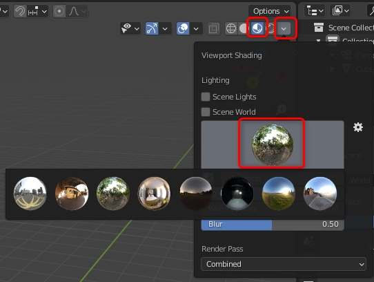

I am not an English speaker and there may be translation errors in the English of this document. I welcome suggestions for grammar and spelling errors.
日本語 / English
(Actually, most of the information you need is already at https://github.com/ds5678/ModComponent/tree/master/docs/ .
The tutorial is also https://github.com/ds5678/ModComponent/blob/master/docs/Item-Mod-Tutorial.md ,
but for those who just read it and still don't understand, here are more detailed steps for Unity beginners.)
All you need to do to create an item mod is to prepare a 3D model or 2D image as the material, and then do a little work in Unity.
However, even if you can make materials, if you have never used Unity before, you may think that it is very complicated and difficult and give up.
In fact, with ModComponent, the operations you do in Unity are always the same simple steps, so you can do it in a short amount of time just like this guide.
This tutorial is from installing 3D software (Blender) and Unity, actually creating a model, and introducing it into the game.
Since there is no time to explain the operation of Blender in detail, this tutorial will only create a simple model.
Also, the clothing function and sound source function are omitted.
Items need a prefab name for use in Unity, in addition to the name normally displayed in the game .
This should start with "GEAR_", so this time we 'll use the prefab name "GEAR_ToiletPaperA" .
Remember that the name "ToiletPaperA" is important.
For mod items, prepare files such as 3D models, 2D icons, translated text, etc., and
then use Unity to combine them into an asset bundle .
(Even if you make multiple items, it will be one asset bundle.)
The file name of the asset bundle is not important, but this time it will be "toiletpapermod" all in lowercase.
This time , I will assume that you will use the "D:\Mod_TP" folder as the working folder .
You can actually create a working folder anywhere you like with any name.
Next, create folders for various work in that subfolder as shown below.
These folder names are not important . You can actually change it to any name you like.
In addition, create " auto-mapped ", " blueprints ", and " gear-spawns " as subfolders of " Items_TP ".
These three folder names are important and cannot be changed .


The steps from Step7-1 to Step7-8 are Blender's explanations, so you don't need to read them.
I usually just make it in Blender, but first I will test it with a simple model.
UVs, materials and textures are also easy. Cameras and lights are not required. You can use the Blender file as it is for Unity, but this time I will export only the necessary objects to FBX .
The model created this time is as follows.

Go to the following page.
https://www.blender.org/download/lts/2-93/
You usually get it from the Windows Store or Steam using the button at the top of the page.
If you don't want to use them, download them using the 2.93.7 link at the bottom.
Install and proceed to the next step.
When you start it, you will see a splash screen in the center, but ignore it.

Click on the empty area around it to close the splash screen.

There is a top bar at the top of the window, where menus and other items are lined up.
There are multiple workspace buttons, initially the "Layout" workspace is selected.
The inside of the window is divided into multiple areas, each displaying a different type of editor.
The button on the top left of the area is for changing the editor type.
The widest area is "3D Viewport".
At the top of the area is the header and at the left is the toolbar. (The shortcut key for showing / hiding the toolbar is [T].)
Practice the operation when the mouse cursor is within the area of the 3D viewport.
(Operation tips are displayed in the status bar at the bottom of the window.)
Initially, the Select tool on the toolbar is selected, so you can select it by left-click on the box object in the center of the area .
The selected object will be highlighted in orange.
You can also left-click to select another object near the box, such as a camera or light.
Click on an empty area to deselect it.
Rotate the mouse wheel to zoom in / out the field of view.
You can rotate the field of view by moving the mouse while holding down the mouse wheel .
You can move the view by moving the mouse while holding down the [Shift] key and the mouse wheel .
Press the [Home] key to bring all objects into view.
Note: If you lose track of where you are looking, press the [Home] key.
If you select one of the objects and then press the [Numpad period] key, that object will be in the center of your field of view.
Delete all three objects (box, camera, light) that are displayed from the beginning.

Header Select menu> All command (shortcut: [A] key)
All objects are selected. You can also see it in the Outliner Editor.

To delete everything, the Object menu in the header> Delete command (shortcut: [X] key or [Delete] key)

All objects have been deleted.
Blender is initially displayed in English. You can change the interface language.

Edit menu> Preference command

Interface ＞ Translation ＞ Language
Select all the Affect check boxes.
There is a 3D cursor (red and white circle) at the intersection of the X and Y axes.
Create a cylinder there, which will be the prototype of toilet paper.

Add ＞ Mesh ＞ Cylinder

A cylinder has been added where the 3D cursor is and it is in the selected state.

Immediately after that, a panel for changing the settings for the added cylinder appears in the lower left corner of the 3D viewport.
Click [ ▼ Add Cylinder ] to expand the panel. Change the cylinder settings as shown below.

The radius of the added cylinder is 1m, which is too large for toilet paper. Change to a radius of 0.07m and a depth of 0.12m.
The number of vertices is initially 32. However, most objects in The Long Dark are low polygons, so change them to decagons (10 vertices).
(Reference: Coffee cups are dodecagonal, soda cans and peach cans are decagonal)
Put the 3D viewport in Edit mode for more editing of the basic cylinder .
Blender's 3Dviewport has the object mode and the edit mode.
Object mode: A mode for performing operations such as "create, delete, move, rotate" objects such as "Cube, Cylinder, Camera, Light".
Edit mode: A mode in which you can edit the elements such as "Face, Edge, and Vertex" that make up an individual object in detail.
Select a cylinder object in object mode and then press [Tab]key to set the view to edit mode for that object.
(You can also change the mode by using the list box at the top left of the header instead of pressing the [Tab] key.)

In edit mode, select the select arrow button on the toolbar.
Select the "Face select" button as shown below.

This will allow you to select the surface you clicked on. Select the top face of the cylinder.
Rotate the view and select the bottom face of the cylinder by holding down the [Shift] key and clicking.
The Shift key adds a selection, leaving both faces selected.
Use the Face > Insert Faces command for the selected faces.

Move the mouse toward the center of the cylinder to create a new face inside the selected face, left click to confirm the size.
Set as follows in the "Inset Faces" panel displayed at the bottom left of the area.

Delete the inserted face.
Press the [X] key or the [Del] key to delete the selected face.
When the selection list of the target to be deleted is displayed, select "Faces".


Blender's mesh objects are made up of multiple faces and are hollow inside.
There is a hole in the cylinder so that you can see the inside of the cylinder.
The front and back of Blender are both visible, but in the game the back is transparent and not visible.
In order to match the game, Blender should also be set to not show the back face.

Show the "Shading" settings panel in the header and turn on "Backface Culling" as shown above.
There is a hole in the cylinder, so stick a face to close the hole.
In edit mode, select the select arrow button on the toolbar.
Select the "Edge select" button as shown below.

Select the edges around the hole in the cylinder.

Since it is a decagonal hole, it has 10 edges. Select one edge at a time by [Shift] + left-click to select all 10 edges.
(Or, [Alt] + left-click to select 10 circular edges at once.)
Use the [Shift] key to select 20 edges on the top and bottom at the same time.
Edge ＞ Bridge Edge Loops

A new cylindrical faces is created between the upper and lower circles (both are actually decagons).
This is the inside of the toilet paper core.


Press the [Tab] key to return from edit mode to object mode.
Now that you have created the object, save the file.
File ＞ Save

The folder to save is "D:\Mod_TP\Working"
The file name should be " TP01.blend ". This name is not important .

Create a "development view / expanded view" of a 3D mesh object in order to paste a 2D image (texture) into the object in Blender
. (Refer to step 7.0 for the completed drawing)
Switch the workspace to "UV Editing" in the Top bar.
The 3D viewport area is split left and right, with the UV Editor area on the left.

In the 3D viewport (the area on the right), select All. (Shortcut: [A] key)
The UV map of the selected part is displayed in the area on the left.

The UV map of the new inner cylinder, which was created by connecting the two holes, is also created by connecting the UV holes.
Move the UVs in that area to a different position to make it easier to paint.
Select the selection tool in the 3D view as shown below to enter the face selection mode.
Use the [Shift] or [Alt] key to select all 10 inner faces of the cylinder.

Only the selected UVs are now displayed in the left area (UV Editor).
Since the UV of the selected cylinder has a shape that is difficult to paint, change it to a flat development view.

With the face selected, press the [-Y] button on the viewport gizmo. (Shortcut : [Numpad 1] key)
The viewpoint will be changed and the cylindrical shape will be displayed from the side.
Unwrap the selected cylindrical UVs again.

UV > Cylinder Projection
Set up the Cylinder Projection as shown below.
The 10 faces will be expanded to line up horizontally.

In the left area (UV Editor), set the selection tool's UV selection mode to Island.

Clicking on any one of the 10 rectangles displayed in the UV Editor area will select all 10 of them.
Island selection is a mode that allows you to select one continuous UV at a time.

When the island is selected and turns orange, select the "Move" tool on the toolbar.
To move an island, drag the white circle that appears in the center of the island.
Temporarily move the island outside the grid.
The green and red arrows displayed in the center of the island are used to move the selection vertically or horizontally only.
Select all in the 3D viewport area. (Select > All, or press [A])
All UVs will now be displayed in the UV Editor.

Use the island selection mode in the UV Editor to move and resize the UVs as shown in the sample above.
Move the two doughnut-shaped UV islands to the same position and superimpose them.
Move the UV island in the cylinder section that we just moved off the grid to an empty spot on the grid.
While selecting this island, select "Scale" tool from the toolbar and drag the white circle to resize it.

When you select an island, you can rotate the island by dragging the white circle by selecting the "Rotate" tool on the toolbar.
At that time, you can limit the angle to 5 degrees by holding down the [Ctrl] key while dragging.
Alternatively, you can enter the angle directly in the Rotate panel at the bottom left.

Make sure that the UVs do not extend beyond the grid area in the end.

After editing the UVs, export the UV layout as a PNG image.
UV > Export UV Layout

Set the options as shown below.
size should be the same size as the actual texture. This example is 1024 * 1024.

The folder to save is "D:\Mod_TP\Working"
The file name should be " TP01_UV.png ". This name is not important . You can actually use any name you like.

The texture should be around 1024x1024 to match other items.
Material settings are done in Unity, so no detailed settings are required in Blender.
Set the texture and material for the objects created up to the section above.
Create a new texture image in the UV editor.
Press the [+ New ] button in the header.

Please set as follows. Color should be white.

A new image has been created. It's still blank, but save it first.
Image > Save As

The folder to save is "D:\Mod_TP\Working"
The file name should be " TP1_Texture.png ". This name is not important . You can actually use any name you like.

In the Properties area, select a material property.
Press the [+ New] button to create a new material.

Type TP_Material in the material's name box.

Press the round(Yellow dot) link button in Base Color, and select "Image Texture".

Click [Open] button under Base Color.

Open the texture "TP1_Texture.png" that you saved earlier.

It is reflected in Base Color.

You can even edit the texture image directly in your painting software. In that case, it is helpful to import the exported UV layout PNG as a layer.
However, in this example, we will do a simple painting directly in Blender.
Select the Texture Paint workspace in the top bar.
The left and right areas are in paint mode, and you can paint on TP1_Texture in either areas.
The "Draw" tool has been selected. (Brush icon)

You can change the brush settings by right-click with the "Draw" tool.
Normally, paint with "Mix".

You can preview the light on an object by setting the shading button in the 3D viewport to " Material Preview " mode.


After painting, overwrite and save the texture image (TP1_Texture.png).

The textures can be further edited with paint software.
Edit the item to make it look better.
In the Layout workspace, switch to object mode. (Shortcut: [Tab] )

Select the toilet paper object and choose the Object> Shade Smooth command.

The shadows on the face will be smooth, but it will not look good.

Select the Object Data Property panel and check Auto Smooth.
Find an angle that improves the shadow by changing the angle.

In the Layout workspace, switch to Object Mode.

Select the toilet paper object, then click the red X in the Gizmo in the upper right. (Shortcut: [Numpad 3] / [Crrl]+[Numpad 3])

The line of sight is from the horizontal direction.
Select the Move tool and drag the "upward blue arrow" of the toilet paper object up.

Align the bottom of the toilet paper with the Y-axis as shown above.
Finally, apply the origin and size of the object.
Once the position is determined, select Object> Apply> All Transforms.

This reflects the movement of the object. (Typically, if you don't do this, the bottom half of the object will be buried in the ground.)
This is the end of editing in Blender.
Save the file.
Blender and Unity have different directions of XYZ axis. Normally, it is recommended to rotate the object 180 degrees on the Z axis - Select > [R](Rotate) > [Z] > [180] > [Enter] - to match the front direction of the object to Unity before doing the Apply. (This doesn't matter because the toilet paper in this example has symmetrical front and back shapes.)
You can use the Blender file as it is in Unity, but this time I will export it to FBX.
Choose File > Export> FBX.

Set as shown in the screenshot below.

A JSON file is a file for writing details about how Mod items work.
You need one item JSON file for each item.
Save the JSON of the item in the "auto-mapped" folder.
Create a file with a text editor according to the name of the mod item you are creating.
Change the extension to .json instead of .txt .
For example, if the item is named "GEAR_ToiletPaperA", the JSON file name should be "toiletpapera.json" with "GEAR_" removed .
File names must be all lowercase. Please actually create Mod_TP\Items_TP\auto-mapped\toiletpapera.json .
A description of each JSON can be found on the following page.
Find the template you need from the page below, copy it to your JSON file (toiletpapera.json) and use it.
This time we will use ModGenericComponent , ModTinderBehaviour , ModHarvestableBehaviour , ModStackableBehaviour .
You need to copy the required parts and then change the following items:
Edit the contents of the toiletpapera.json file.
Pay attention to the position of the comma when adding or removing objects.
Comments cannot be written in JSON, so if there is a comment part in the template, please delete it.
{
"ModGenericComponent": {
"DisplayNameLocalizationId" : "GAMEPLAY_ToiletPaperA",
"DescriptionLocalizatonId" : "GAMEPLAY_ToiletPaperADescription",
"InventoryActionLocalizationId" : "",
"WeightKG": 0.1,
"DaysToDecay" : 0,
"MaxHP" : 100,
"InitialCondition" : "Perfect",
"InventoryCategory" : "Auto",
"PickUpAudio" : "",
"PutBackAudio" : "",
"StowAudio" : "Play_InventoryStow",
"WornOutAudio" : "",
"InspectOnPickup" : true,
"InspectDistance" : 0.4,
"InspectAngles" : [0, 0, 0],
"InspectOffset" : [0, 0, 0],
"InspectScale" : [1, 1, 1],
"NormalModel" : "",
"InspectModel" : ""
},
"ModTinderBehaviour": {
"SuccessModifier" : 35,
"DurationOffset" : 0
},
"ModHarvestableBehaviour": {
"Audio" : "",
"Minutes" : 5,
"YieldCounts" : [2],
"YieldNames" : ["GEAR_Tinder"],
"RequiredToolNames" : []
},
"ModStackableBehaviour": {
"SingleUnitTextId" : "GAMEPLAY_ToiletPaperA",
"MultipleUnitTextId" : "GAMEPLAY_ToiletPaperA",
"StackSprite" : "",
"UnitsPerItem" : 1,
"ChanceFull" : 100
}
}
Edit "Mod_TP\Unity\Assets\Localization.json" that you copied from the Unity template to the working folder in (step6-2) .
You can edit it with a JSON editor or just a text editor.
A description of localized JSON can be found below.
https://github.com/ds5678/ModComponent/blob/master/docs/Basic-Item-Configuration.md
Edit the JSON content to match the name of the mod item you are creating. You must rename
" GAMEPLAY_SampleItem " and " GAMEPLAY_SampleItemDescription ".
If the item is named " GEAR_ToiletPaperA ", change it to "GAMEPLAY_ToiletPaperA " and " GAMEPLAY_ToiletPaperADescription ".
{ "GAMEPLAY_ToiletPaperA" : { "English" : "Toilet Paper Roll", "Japanese" : "トイレットペーパーのロール" }, "GAMEPLAY_ToiletPaperADescription" : { "English" : "Not only used for toilets, can be used as tinder in survival.", "Japanese" : "トイレに使うだけではなく、サバイバルでは火口としても使えます。" } }
First, download and install Unity Hub from the link below.
https://unity.com/download
Next, Unity will install Unity 2019.4.19 instead of the latest version.

You can select the Language pack during installation.

After the Unity installation is complete, open Unity Hub. Click Open for the
Project .

Open your Mod_TP\Unity folder where you previously copied the Unity template. (step 6.2)


Now that you have a new project in Unity Hub, click on it to open it.
A dialog box will appear asking you to confirm the new version of the Unity Editor. Click the "Skip new version" button to cancel the download.
The Unity Editor window opens. The window is divided into several views.
Hierarchy is on the upper left, Scene is on the center, Project is on the lower left, and Inspector is on the right.

If you have the language pack installed, you can open Edit menu> Preferences> Languages and select your language.

Import the FBX file exported from Blender into Unity.
Drag the TP01.fbx file from Windows File Explorer to the Models folder in the project view .

Alternatively, select the Models folder in the project view, select TP01.fbx from the Asset menu or right-click and select Import New Asset.

TP01 is imported into the Models folder and the icon is displayed.

Import the PNG file for the texture used in Blender into Unity.
Drag the TP1_Texture.png file from Windows File Explorer to the Textures folder in the project view.
Alternatively, select the Models folder in the project view and select "Import New Asset" from the Asset menu or right-click.

The material is embedded in the imported model "TP01", Extract it.
Select the Models folder in the project view to see the contents of the folder to the right of it.
Select TP01 from there, then click the Extract Materials button in the Inspector view.

When the window for selecting the extraction destination folder is displayed, select the "Materials" folder.

Select " TP_Material " extracted from the Materials folder in the project view .
Please set as follows in the inspector view.

Albedo has TP1_Texture set for the texture .
The albedo color is white and the Metallic and Smoothness values are 0.
Let's save it.
Save everything with File> Save.

Drag the file TP01 imported into Asset/Models into the Hierarchy view.
The Hierarchy displays the icon for the game object TP01, and the Scene view displays the model.

Drag the Hierarchy's TP01 icon to Asset/Prefabs.
When asked to choose between "Original Prefab" and "Prefab Variant", select the "Original Prefab" button.

The name of Hierarchy's TP01 will be in blue letters. Then, TP01 will be displayed in the Prefabs folder.
Then rename TP01 in Prefabs to " GEAR_ToiletPaperA " as you had decided in advance.
This prefab name is important for ModComponent .

Select GEAR_ToiletPaperA in Prefabs and then click the Inspector's Open Prefab button.
Alternatively, double-click GEAR_ToiletPaperA . Alternatively, click the " > " button to
the right of the Hierarchy TP01 name . This will open the prefab and allow you to edit it in the Inspector.

Click the [ Add Component ] button in the Inspector of GEAR_ToiletPaperA.
Select Physics> Box Collider.

Objects in the scene are wrapped in a box-shaped green line.
The collider should normally be the right size, but if you want to edit the size, turn on the Edit Collider button and then drag the green dot that appears on the surface of the box.

Click the "<" button to the left of the Hierarchy GEAR_ToiletPaperA icon.

Select the Assets/InventoryGridIcons folder in the Project view .
The folder contains an image file called "ico_GearItem__SampleItem.png" as a template. (The character following GearItem is two underscores .)
This filename is important.
You need to change the name based on the prefab name of your mod item.
In this example, the prefab name is "GEAR_ToiletPaperA", so change the icon name to " ico_GearItem__ToiletPaperA.png ".
The next character in a GearItem must have two consecutive underscores.

More detailed information about the inventory icon can be found on the following pages.
https://github.com/ds5678/ModComponent/blob/master/docs/Basic-Item-Configuration.md
This image must be 512 * 512 pixels in size.
Nothing is drawn on the icon image of the template, so edit it yourself.
If you want to view the image file in Windows File Explorer , right-click on ico_GearItem__ToiletPaperA.png in the Project view and select "Show in Explorer".

The easiest way would be to take a screenshot of Blender or Unity and crop the item's image with 2D image editing software.
Here are some tips on how to take screenshots with Unity.

If the image is saved correctly , " ico_GearItem__ToiletPaperA.png " in the InventoryGridIcons folder will be updated.

In this example, I'll name the AssetBundle " toiletpapermod ".
Select the Assets folder in the Project view, then click the Localization file icon in it.
Select New in the Interloper Asset Bundle drop-down list box.

Enter "toiletpapermod" as the new name.

In the same way, select the two icons in the "InventoryGridIcons" folder and the "Prefabs" folder, and name their AssetBundle as "toiletpapermod".
Note: You do not need to rename the AssetBundle for the files in those folders.
This is the final task in Unity.
Select the Build Asset Bundles command from the Assets menu.

The Unity template creates a "Mod_TP\Unity\AssetBundles " folder and exports the set bundle files into it.
Multiple files are stored in the AssetBundles folder, but ModComponent only needs one file named " toiletpapermod.unity3d ".
The ModComponent file is just a ZIP file renamed and the extension changed to ".modcomponent".
You need to collect the required files in the "Items_TP" folder and create a ZIP first.
Copy the toiletpapermod.unity3d exported to the Mod_TP\Unity\AssetBundles folder to the Mod_TP\Items_TP\auto-mapped folder. At this time, toiletpapera.json should already be saved in the auto-mapped folder by (step 8.1) .
In this example, we will use "ModComponent Extractor", a tool to easily create ModComponent files.
Proceed to the next step (10.3).
However, if you want to create your own ZIP file , follow the steps below.
Compress the three folders inside the "Items_TP" folder with the name "Items_TP.zip".

Please note that the Items_TP folder should not be included in Items_TP.zip. The three folders "auto-mapped", "blueprints" and "gear-spawns" must be placed directly in the ZIP.
Once the ZIP file is created, change its extension from .zip to .modcomponent .
ModComponentExtractor is an application for making and extracting'.modcomponent' files used by ModComponent .
Open the link below to download the latest release. (Windows users need ModComponentExtractor_Win64.zip)
https://github.com/ds5678/ModComponentExtractor Extract
ModComponentExtractor.exe from the downloaded zip file to Mod_TP folder.
In Windows File Explorer, drag the Items_TP icon in the Mod_TP folder to ModComponentExtractor.exe .

If "Succeeded" is displayed in white letters in the black window of ModComponent Extractor, it is successful.
Please close the black window.
Inside the Mod_TP folder, there should be a file named Items_TP.modcomponent .
That is the completed item mod.
If you want to create your own item mods, you should already be using other TLD mods.
So I won't go into detail about basic mod installations here.
Instructions on installing the basic mods can be found at https://xpazeman.com/tld-mod-list/ .
Please install all of the following mods to make it work without errors.
The following mods are not required, but are recommended as they are useful.
Make sure The Long Dark game program is closed.
Just like any other mod, copy your mod (Items_TP.modcomponent) to The LongDark\Mods folder.
Launch The Long Dark.
In the MelonLoader window, look for any errors.
When Melon Loader is hidden in the game window, use [Alt] + [Tab] to bring the window to the front.
If there are any errors, there is a mistake in working with JSON or Unity.
Be careful of incorrect names, uppercase and lowercase letters, and typos in folders and files, their hierarchical structure, prefabs, and so on.
Find and fix any mistakes, recreate the AssetBundle and ModComponent, and reinstall the fixed mod.

If there are no errors, launch the game and then open the developer console. ( [F1] key)
After entering the name halfway like "add toil", press the [Tab] key to "auto-complete" the remaining characters in the item name.
Then press Enter to execute the command. If the item has been added to the inventory, it is successful.
If you can't autocomplete the item name, there is something wrong with the mod.
Checks if the item can be manipulated and saved.
Check if the function of the item set in JSON (toiletpapera.json) works normally.

After all the modding tests are done, set up the items to be available to the player during gameplay.
There are the following two types.
More information can be found on the pages below.
https://github.com/ds5678/ModComponent/blob/master/docs/Gear-Spawns.md
We will use the required MOD Coordinates Grabber, so please check the MOD distribution page for how to use it.
https://github.com/ds5678/Coordinates-Grabber
You need to create a text file in the Mod_TP\Items_TP\gear-spawns folder.
The number of files and the file name are not important.
In this example, create the following two files.
You can leave the contents empty, so actually save these two files there.
Edit TP-LootTables.txt with a text editor.
The following URL has the necessary information.
https://github.com/ds5678/ModComponent/blob/master/docs/Loot-Tables.md
Below is a sample of TP-LootTables.txt.
This sets the probability that toilet paper will be found in bathroom cabinets and fishing hut drawers .
Since the name of "GEAR_ToiletPaperA" can be omitted according to the explanation in (step 13.0), it is described as "ToiletPaperA".
loottable=BathroomCabinet item=ToiletPaperA w=10 loottable=FishingDrawer item=ToiletPaperA w=3
Optional: There is a template at the URL below.
You can copy all the lines and paste them into your TXT file.
https://github.com/stmSantana/ModComponentDocs/blob/main/TutorialTP/Samples/template-LootTables.txt
Most container names should be understood by looking at <LootTableName>.
But names that start with Cargo can be confusing. They are large boxes scattered around Timberwolf Mountain.
You can use Coordinates Grabber in loot table mode during the game to find out the <Loot Table Name> of the container under the mouse cursor.
Edit TP-Scenes.txt with a text editor.
The following URL has the necessary information.
https://github.com/ds5678/ModComponent/blob/master/docs/Scenes.md
Below is a sample of TP-Scenes.txt.
This sets the probability that toilet paper will spawn in the camp office . (Two places on the file cabinet. Probability is 50% and 100%.)
scene=CampOffice item=GEAR_ToiletPaperA p=4.6833,1.8265,-3.3410 r=0.0000,119.9167,0.0000 c=50 item=GEAR_ToiletPaperA p=4.6700,1.8265,-3.1150 r=0.0000,55.7875,0.0000 c=100
Optional: There is a template at the URL below.
You can copy all the lines and paste them into your TXT file.
https://github.com/stmSantana/ModComponentDocs/blob/main/TutorialTP/Samples/template-Scenes.txt
Most major "scene" names should be understandable by looking at the <SceneName> in the comment line and the accompanying instructions. is.
For example, the outdoor scene name on a coastal highway is "Coastal Region".
The indoor scene name of Gray Mothers House is "Grey Mothers House A".
But you can't tell the difference between a typical cave or cabin like A, B, C by looking at the name.
You need to look it up in Coordinates Grabber.
Start the gameplay and get your mod item (ToiletPaperA) with the add toiletpapera command on the developer console.
Then actually place it yourself where you want the item to spawn.
You can use Coordinates Grabber in Scene mode to look up the <SceneName> of the item under the mouse cursor.
Then, while in Scene mode,If you press the right Ctrl key, the < SceneName > will be copied to the clipboard .
"Paste" it in the correct Scene position in TP-Scenes.txt with a text editor .
Then use Coordinates Grabber in Name mode and press the Right Ctrl key to copy the complete item clipboard .
" Paste " it in a text editor under the correct Scene in TP-Scenes.txt .
When you use the scene command in the developer console mod, the scene will be loaded immediately.
(Example: scene campoffice)
NOTE: You may think this is convenient, as it is like instantaneous movement, but since it initializes the scene and the player's inventory, it should only be used for debugging, not for normal play.
After saving the two text files, create ModComponent again. See (Step 10.3.2.).
Then install the completed modding again. See (Step11.).
Then test the mod again. See (Step12.).
Start a new game. Go to the Mystery Lake camp office.
(You set the spawn there in step 13.3)
If you don't get an error and you have one or more toilet papers spawned on your camp office file cabinet, you're good to go .
congratulation! This completes the item mod.
You can publish the completed "Items_TP.modcomponent".
Create a new object in Blender called "ToiletPaperB" as another new item (half-used and thin toilet paper roll) and add it to your mod.
In this case, one asset bundle file will contain two prefabs.
You need to create a new toiletpaperb.json for the item JSON.
There is only one file for Localization.json, which is the translated JSON. Add the settings for the second item in it.
It's okay to increase the number of gear-spawns text files, but in this example we'll just add a few lines to the existing file.
(the end)